Selective Work Only
We focus on supported units and realistic jobs instead of accepting everything and hoping it works out.
Springfield • Ozark • Rogersville • Southwest Missouri
Integrity Transmission & Drivetrain provides selective transmission rebuilds, bench rebuilds, transfer case repair, differential service, and drivetrain work for customers who want a clean process, clear communication, and work done with pride.
Fastest Way To Start
Include year, make, model, engine, 2WD/4WD, symptoms, and whether the transmission or drivetrain unit is still installed.
Text DetailsWhy Customers Choose Integrity
Transmission and drivetrain work is expensive. Customers deserve a clear process, realistic expectations, and a business that is willing to explain what makes sense before major money is spent.
We focus on supported units and realistic jobs instead of accepting everything and hoping it works out.
You get direct answers about symptoms, options, teardown findings, extra costs, and approval points.
Rebuilds are approached with converter condition, contamination, cooling, known weak points, and vehicle use in mind.
Core Services
If you want to look things over first, every service, supported unit, rebuild option, and warranty detail is broken down on its own page.
Teardown, inspection, cleaning, parts replacement, reassembly, and build planning for supported automatic transmissions.
View servicesBring in a supported transmission and get a focused rebuild path without unnecessary vehicle-side work.
View optionsSelect transfer cases, front IFS differentials, rear differentials, and related drivetrain repairs.
Supported unitsReal Work Gallery
Transmission and drivetrain work should not feel like mystery work. This gallery shows real teardown, inspection, cleaning, assembly, and failure evidence from actual shop work.
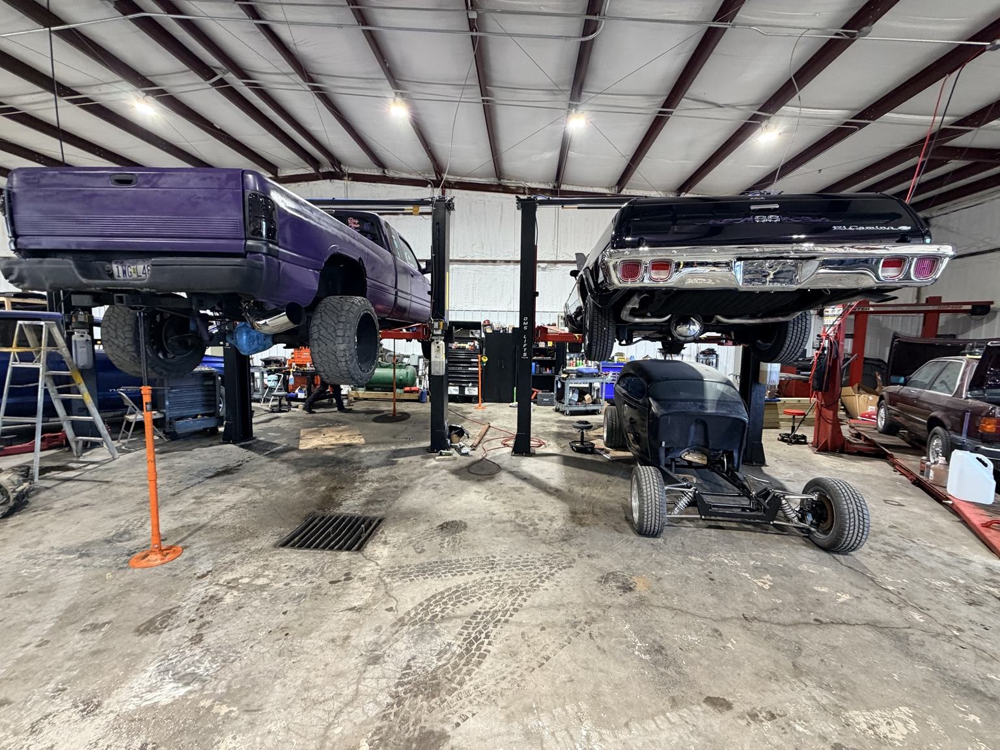
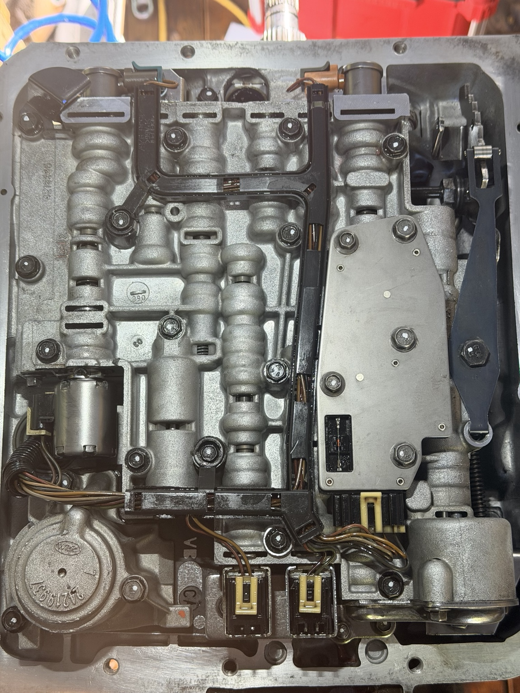
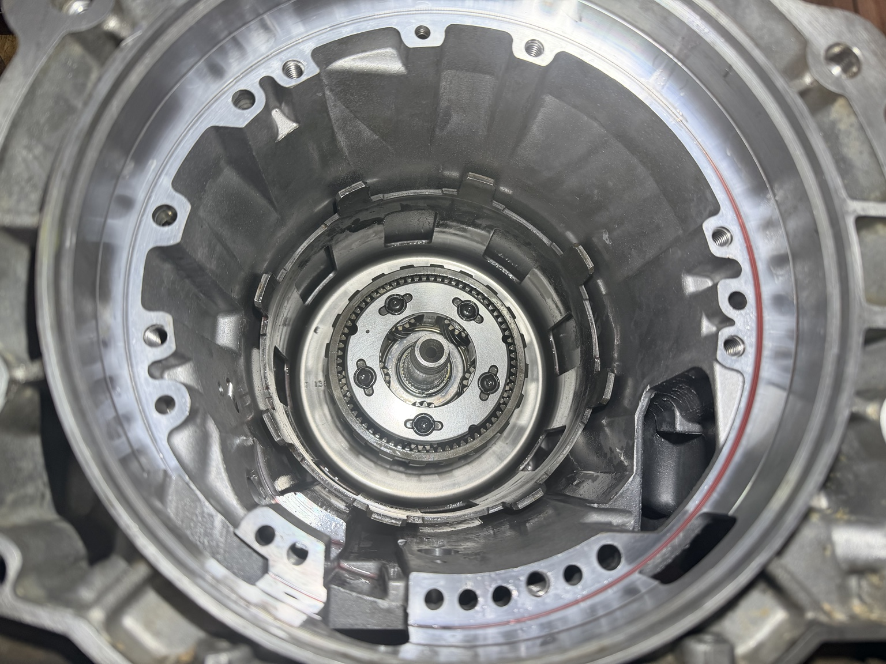
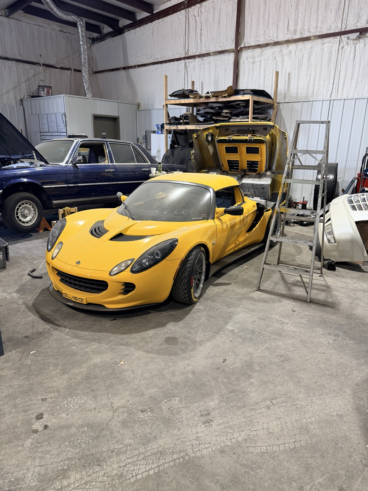
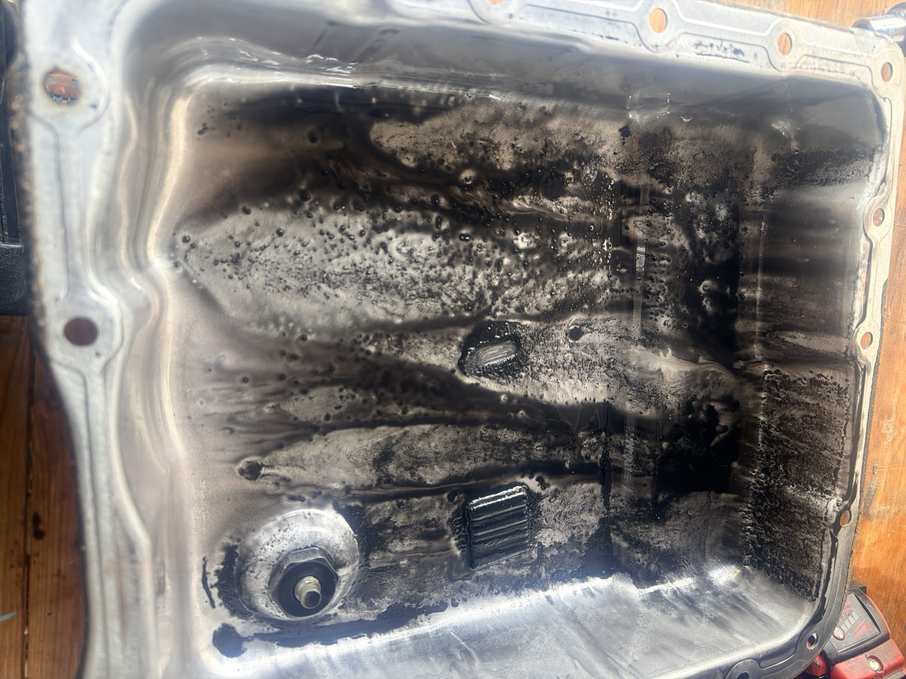

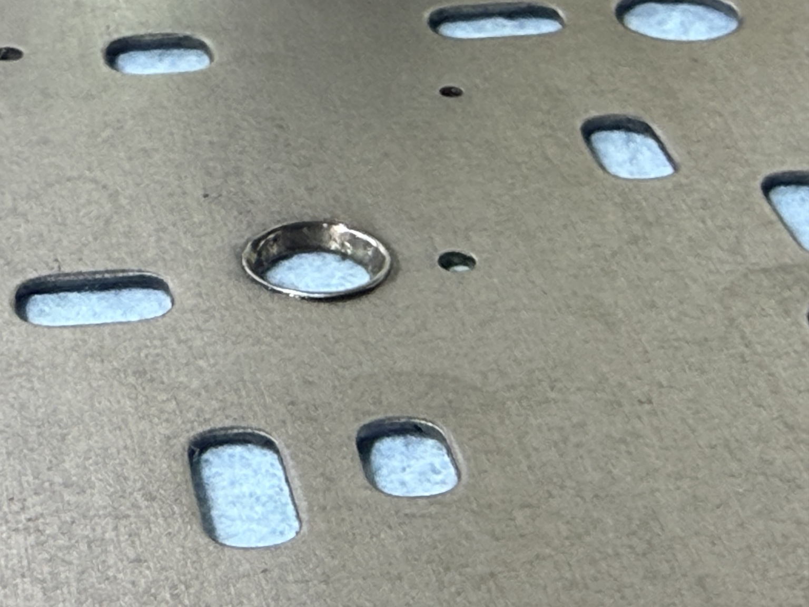

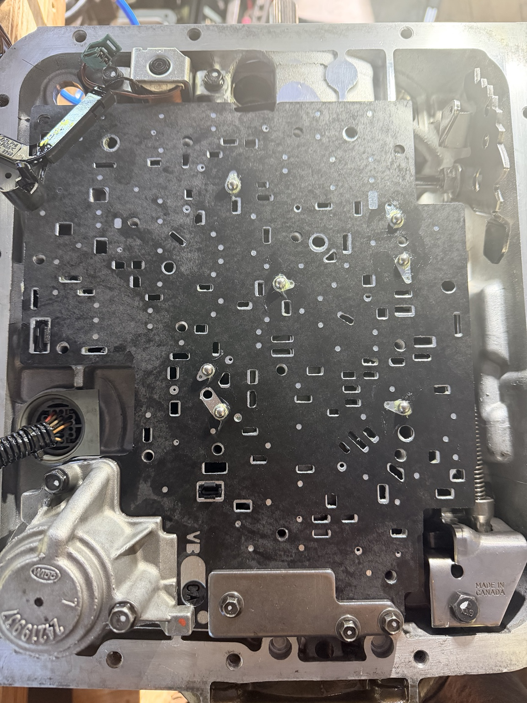
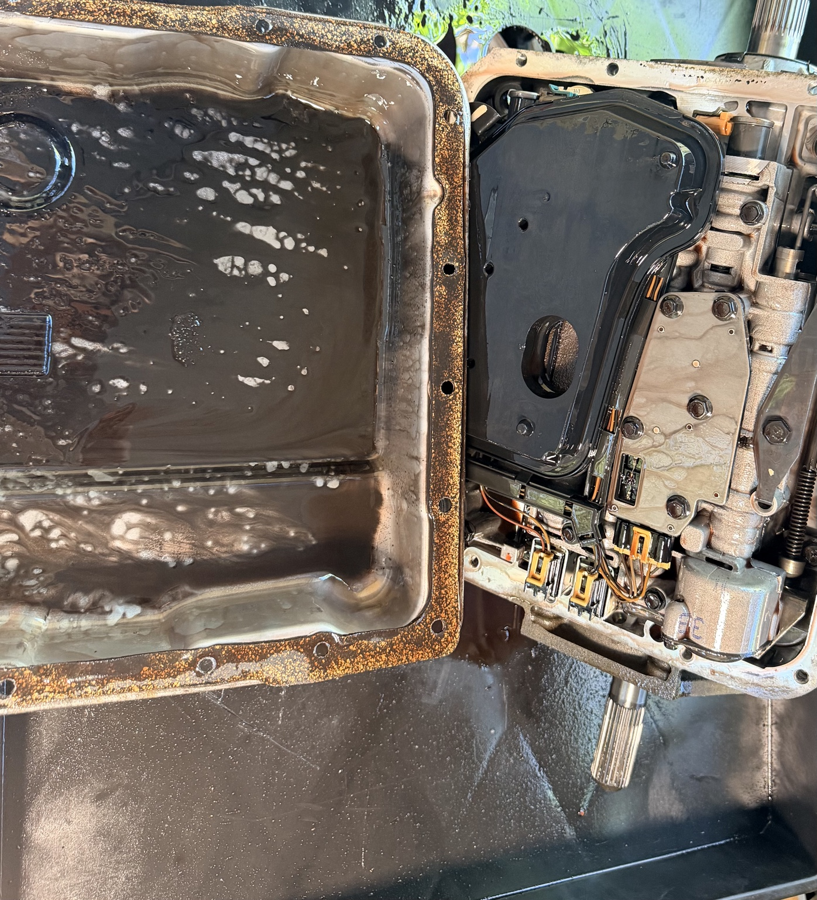
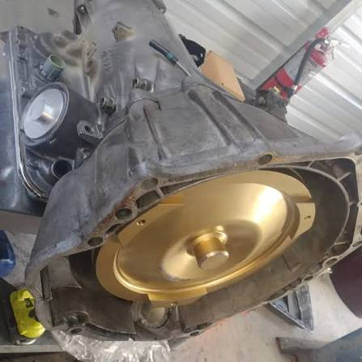
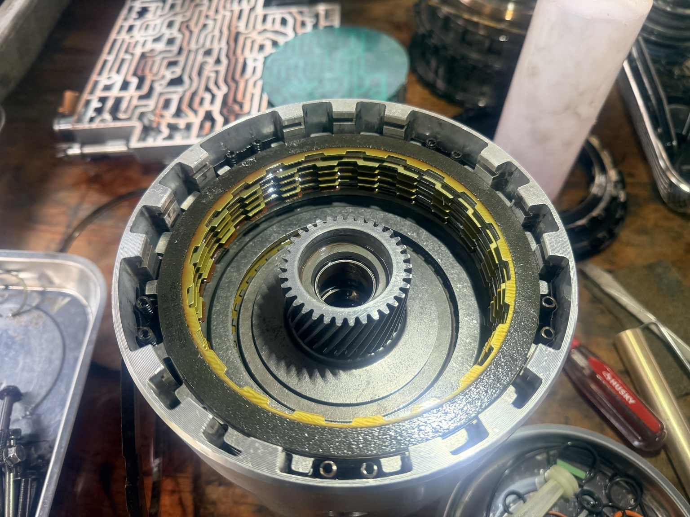
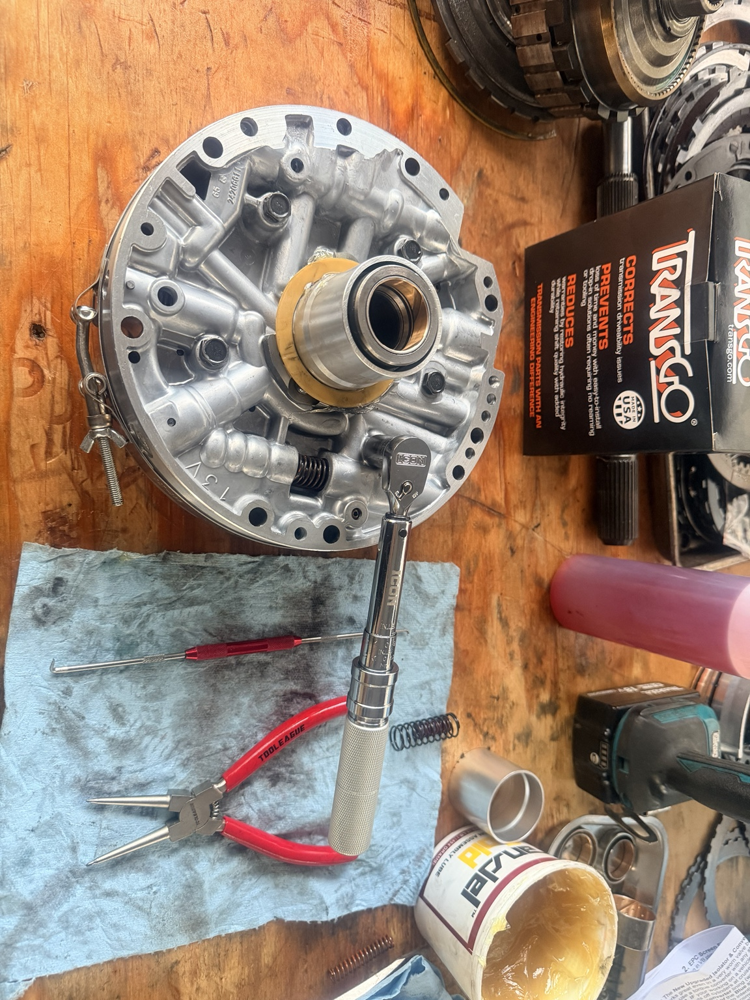
The Process
Symptoms matter, but teardown tells the truth. The process is built around screening the job, setting expectations, inspecting the unit, and communicating before major changes are made.
Start a QuoteVehicle details, symptoms, drivetrain type, and supported-unit fit are reviewed first.
Bench build, R&R, rebuild tier, converter needs, and known risks are discussed clearly.
The unit is cleaned, inspected, corrected, and rebuilt around the actual condition found.
Warranty direction, supporting systems, and final recommendations are handled in writing.
Supported Applications
Selective work helps protect quality, scheduling, parts planning, and customer expectations. The supported units page gives cutomers a clearer look at common transmissoin and drivetrain applications currently reveiwed for service.
View Supported UnitsWarranty & Expectations
Warranty coverage depends on the work performed, parts used, installation conditions, supporting systems, and the final written agreement.
Local Transmission & Drivetrain Service
Integrity Transmission & Drivetrain helps local customers with supported transmission rebuilds, bench builds, transfer case repair, differential service, and drivetrain repair by appointment.
Quick Questions
No. Work is limited to supported transmissions and drivetrain units so quality and expectations stay controlled.
Yes. Bench rebuilds are available for supported units. Removal and reinstallation may be available depending on the vehicle and schedule.
Yes. Select transfer cases, front IFS differentials, rear differentials, and related drivetrain work are accepted.
Send year, make, model, engine, 2WD or 4WD, symptoms, and whether the unit is still installed.
Ready To Talk?
Call, text, or request a quote online. The more accurate your vehicle information is, the more accurate the answer can be.